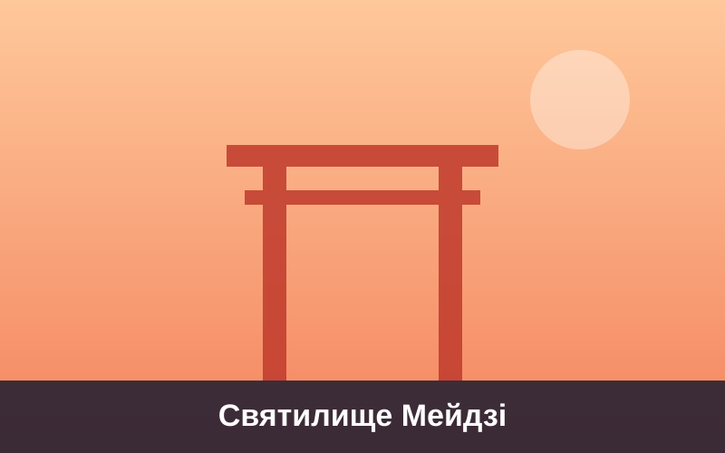

🏛️ Визначні пам’ятки
- Перехрестя Сібуя — найзнаменитіший «людський потік» світу.
- Храм Сенсо-дзі в Асакусі — найстаріший храм Токіо.
- Святилище Мейдзі — тиша й ліс посеред мегаполіса.
- Токійська вежа та Skytree — краєвид на нескінченне місто, а в ясний день — на Фудзі.

🍽️ Кухня та гастрономія
Рамен о другій ночі 🍜, суші на рибному ринку 🍣 та десерти з матчею — японська кухня здивувала нас увагою до кожної деталі. Навіть сендвіч із звичайного магазину тут смачніший, ніж здається.

🎭 Культура та традиції
Японці дуже ввічливі: тут не прийнято залишати чайові, голосно розмовляти в метро чи їсти на ходу. Навесні все місто виходить милуватися сакурою — це свято «ханамі».
Віртуальна прогулянка мапою
💭 Особисті історії
У святилищі Мейдзі ми написали побажання на дерев’яних табличках «ема». Через рік одне з них — побачити Фудзі — збулося: ми повернулися й піднялися на гору разом. Токіо навчив нас поєднувати швидкість і спокій.